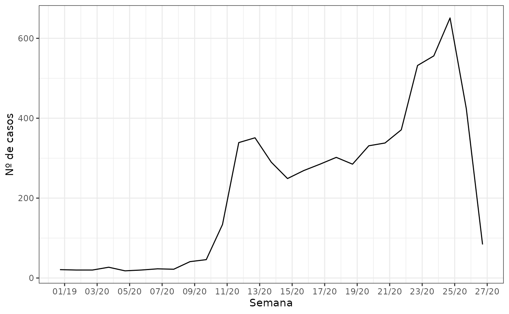
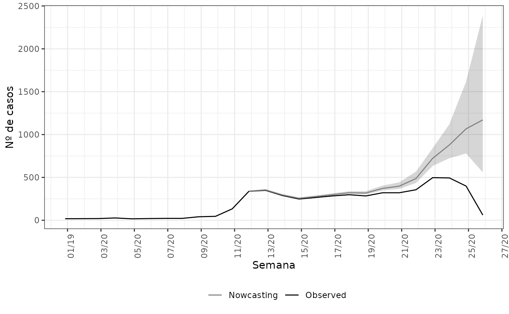
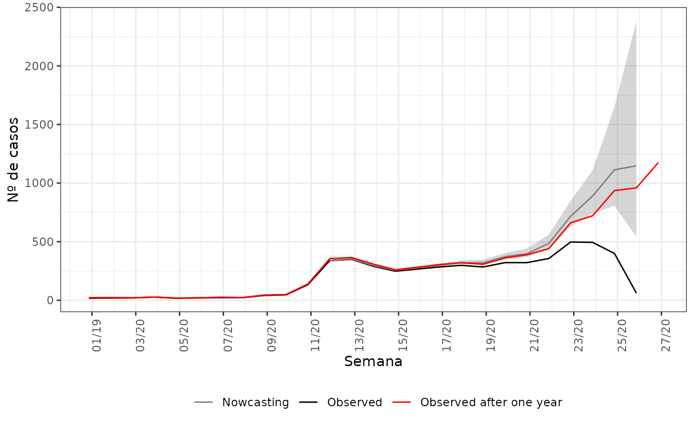

Nowcasting para a tomada de decisão
Fonte:vignettes/articles/3_nowcasting_importance.Rmd
3_nowcasting_importance.RmdResumo
Um exemplo curto de como a estimativa do nowcasting pode ajudar no processo de tomada de decisão.
Nowcasting como ferramenta de apoio à decisão
Fazer o nowcasting de uma curva em ascensão, ou em qualquer outro momento, pode dar suporte quantitativo à tomada de decisão. Em crises de saúde pública, o mais necessário é uma forma de antecipar, ao menos, o que está acontecendo no momento. O nowcasting é a ferramenta para esse tipo de pergunta e pode trazer informações dos dados que apoiem as decisões necessárias.
Começamos esta seção cortando os dados originais em um momento de aparente queda das hospitalizações por SRAG em Belo Horizonte, município que teve uma resposta rápida à pandemia de Covid-19. A pressão sobre o sistema de saúde lá demorou mais que no resto do país, e os dados naquele momento mostravam uma queda. Filtramos todos os casos digitados até 4 de julho de 2020, pela data de digitação, data em que os casos aparecem na base de dados.
library(tidyverse)
library(lubridate)
library(nowcaster)
## To see Nowcasting as if we were on the verge of rise in the curve
data("sragBH")
srag_now<-sragBH |>
filter(DT_DIGITA <= "2020-07-04")
# We now call an internal function to construct a count of cases by age to each date of onset
data_by_week <- nowcaster:::data.w_no_age(dataset = srag_now,
date_onset = DT_SIN_PRI,
date_report = DT_DIGITA) |>
group_by(date_onset) |>
tally()
data_by_week |>
ggplot(aes(x = date_onset,
y = n))+
geom_line()+
theme_bw()+
labs(x = 'Date of onset of symptoms',
y = 'Nº de casos')+
scale_color_manual(values = c('grey50', 'black'),
name = '')+
scale_x_date(date_breaks = '2 weeks',
date_labels = '%V/%y',
name = 'Semana')
Ajuste do modelo
Use as abas para ver a análise com a nowcasting_inla()
(INLA) ou com a nowcasting_mgcv() (mgcv); escolher uma aba
troca todas as abas da página.
Sobre esses dados filtrados, estimamos os casos que já iniciaram
sintomas mas ainda não foram notificados, ou seja, que ainda não estão
na base. Basta passar à função nowcasting_inla o conjunto
de dados filtrado e as colunas date_onset e
date_report, e pedir que a função retorne a curva epidêmica
por semana epidemiológica.
nowcasting_bh_no_age <- nowcasting_inla(dataset = srag_now,
date_onset = DT_SIN_PRI,
date_report = DT_DIGITA,
data.by.week = T)
head(nowcasting_bh_no_age$data)#> # A tibble: 6 × 4
#> dt_event delay Y Time
#> <date> <dbl> <dbl> <int>
#> 1 2019-12-29 0 1 1
#> 2 2019-12-29 1 2 1
#> 3 2019-12-29 2 4 1
#> 4 2019-12-29 3 5 1
#> 5 2019-12-29 4 2 1
#> 6 2019-12-29 5 2 1
nowcasting_bh_no_age_mgcv <- nowcasting_mgcv(dataset = srag_now,
date_onset = DT_SIN_PRI,
date_report = DT_DIGITA,
data.by.week = T)
head(nowcasting_bh_no_age_mgcv$data)#> # A tibble: 6 × 4
#> dt_event delay Y Time
#> <date> <dbl> <dbl> <int>
#> 1 2019-12-29 0 1 1
#> 2 2019-12-29 1 2 1
#> 3 2019-12-29 2 4 1
#> 4 2019-12-29 3 5 1
#> 5 2019-12-29 4 2 1
#> 6 2019-12-29 5 2 1O triângulo de atraso
O triângulo de atraso depende apenas dos dados, então é o mesmo para os dois modelos.
Antes de ver o resultado do nowcasting, olhamos uma etapa intermediária do processo, o triângulo de atraso, que organiza os dados para o nowcasting. O triângulo de atraso é apenas uma tabela com o número de casos para cada atraso (em dias ou semanas inteiras) entre a data de início dos sintomas e a data de notificação, para cada data de início dos sintomas. A parte mais próxima do presente tem contagens menores e atrasos menores: como o sistema leva tempo para processar os casos, os casos mais recentes ainda são menos numerosos que os antigos, que já tiveram tempo de ser processados.
A partir dos dados no formato semanal, montamos as contagens de casos por atraso. Tabulando o atraso contra a data de início dos primeiros sintomas, vemos o padrão de atraso dos casos.
library(dplyr)
data_triangle <- nowcasting_bh_no_age$data |>
filter(delay < 30) |>
arrange(delay) |>
select(-Time)
data_triangle |>
filter(dt_event >= (max(dt_event) - 84),
delay <= 10) |>
tidyr::spread(key = delay, value = Y)#> # A tibble: 13 × 12
#> dt_event `0` `1` `2` `3` `4` `5` `6` `7` `8` `9` `10`
#> <date> <dbl> <dbl> <dbl> <dbl> <dbl> <dbl> <dbl> <dbl> <dbl> <dbl> <dbl>
#> 1 2020-03-29 23 76 70 18 27 20 16 15 11 6 2
#> 2 2020-04-05 15 103 38 25 24 8 10 8 5 4 7
#> 3 2020-04-12 24 79 63 30 23 21 7 12 3 4 0
#> 4 2020-04-19 17 111 80 22 15 10 16 3 5 5 NA
#> 5 2020-04-26 22 143 51 26 17 16 4 12 7 NA NA
#> 6 2020-05-03 39 106 87 24 9 5 8 6 NA NA NA
#> 7 2020-05-10 37 154 68 32 8 12 10 NA NA NA NA
#> 8 2020-05-17 31 153 80 20 22 15 NA NA NA NA NA
#> 9 2020-05-24 41 154 70 67 24 NA NA NA NA NA NA
#> 10 2020-05-31 34 174 191 98 NA NA NA NA NA NA NA
#> 11 2020-06-07 22 240 232 NA NA NA NA NA NA NA NA
#> 12 2020-06-14 44 355 NA NA NA NA NA NA NA NA NA
#> 13 2020-06-21 61 NA NA NA NA NA NA NA NA NA NAOlhamos apenas os casos com 10 semanas de atraso ou menos. Por
padrão, o atraso máximo considerado no nowcasting é de 15 semanas, e
pode ser alterado pelo parâmetro Dmax.
Estimativa do nowcasting
Agrupado e somado pela data de início dos sintomas, aqui
DT_SIN_PRI, este elemento é a curva epidemiológica
observada. Para ilustrar, plotamos a estimativa e a curva epidemiológica
juntas.
library(ggplot2)
dados_by_week <- nowcasting_bh_no_age$data |>
dplyr::group_by(dt_event) |>
dplyr::reframe(
observed = sum(Y, na.rm = T)
)
nowcasting_bh_no_age$total |>
ggplot(aes(x = dt_event, y = Median,
col = 'Nowcasting')) +
geom_line(data = dados_by_week,
aes(x = dt_event, y = observed,
col = 'Observed'))+
geom_ribbon(aes(ymin = LI, ymax = LS), colour = NA,
alpha = 0.2,
show.legend = F)+
geom_line()+
theme_bw()+
theme(legend.position = "bottom",
axis.text.x = element_text(angle = 90)) +
scale_color_manual(values = c('grey50', 'black'),
name = '')+
scale_x_date(date_breaks = '2 weeks',
date_labels = '%V/%y',
name = 'Semana')+
labs(x = '',
y = 'Nº de casos')
library(ggplot2)
dados_by_week <- nowcasting_bh_no_age_mgcv$data |>
dplyr::group_by(dt_event) |>
dplyr::reframe(
observed = sum(Y, na.rm = T)
)
nowcasting_bh_no_age_mgcv$total |>
ggplot(aes(x = dt_event, y = Median,
col = 'Nowcasting')) +
geom_line(data = dados_by_week,
aes(x = dt_event, y = observed,
col = 'Observed'))+
geom_ribbon(aes(ymin = LI, ymax = LS), colour = NA,
alpha = 0.2,
show.legend = F)+
geom_line()+
theme_bw()+
theme(legend.position = "bottom",
axis.text.x = element_text(angle = 90)) +
scale_color_manual(values = c('grey50', 'black'),
name = '')+
scale_x_date(date_breaks = '2 weeks',
date_labels = '%V/%y',
name = 'Semana')+
labs(x = '',
y = 'Nº de casos')Comparando com o que aconteceu
Como esperado, o nowcasting estimou uma curva em ascensão quando o que se observava era uma queda. Acrescentamos ao gráfico o que de fato aconteceu naquele período, com os dados inseridos depois da data em que o nowcasting estimou a subida da curva de hospitalizações por SRAG.
nowcasting_bh_no_age$total %>%
ggplot(aes(x = dt_event, y = Median, col = 'Nowcasting')) +
geom_line(data = dados_by_week,
aes(x = dt_event, y = observed, col = 'Observed'))+
geom_ribbon(aes(ymin = LI, ymax = LS), colour = NA,
alpha = 0.2,
show.legend = F)+
geom_line()+
geom_line( data = sragBH %>%
filter(DT_SIN_PRI <= "2020-07-04") %>%
mutate(
D_SIN_PRI_2 = DT_SIN_PRI - as.numeric(format(DT_SIN_PRI, "%w"))
) %>%
group_by(D_SIN_PRI_2) %>%
tally(),
mapping = aes(x = D_SIN_PRI_2, y = n,
color = "Observed after one year")) +
theme_bw() +
theme(legend.position = "bottom",
axis.text.x = element_text(angle = 90)) +
scale_color_manual(values = c('grey50', 'black', 'red'),
name = '')+
scale_x_date(date_breaks = '2 weeks',
date_labels = '%V/%y',
name = 'Semana')+
labs(x = '',
y = 'Nº de casos')
nowcasting_bh_no_age_mgcv$total %>%
ggplot(aes(x = dt_event, y = Median, col = 'Nowcasting')) +
geom_line(data = dados_by_week,
aes(x = dt_event, y = observed, col = 'Observed'))+
geom_ribbon(aes(ymin = LI, ymax = LS), colour = NA,
alpha = 0.2,
show.legend = F)+
geom_line()+
geom_line( data = sragBH %>%
filter(DT_SIN_PRI <= "2020-07-04") %>%
mutate(
D_SIN_PRI_2 = DT_SIN_PRI - as.numeric(format(DT_SIN_PRI, "%w"))
) %>%
group_by(D_SIN_PRI_2) %>%
tally(),
mapping = aes(x = D_SIN_PRI_2, y = n,
color = "Observed after one year")) +
theme_bw() +
theme(legend.position = "bottom",
axis.text.x = element_text(angle = 90)) +
scale_color_manual(values = c('grey50', 'black', 'red'),
name = '')+
scale_x_date(date_breaks = '2 weeks',
date_labels = '%V/%y',
name = 'Semana')+
labs(x = '',
y = 'Nº de casos')
Nowcasting e tomada de decisão
Isso encerra o primeiro exemplo simples de estimativa dos eventos já iniciados mas ainda não notificados, isto é, o nowcasting. A relevância do nowcasting para as decisões em saúde pública vem do entendimento de que o que está nas bases de dados é apenas um retrato da situação em tempo real. O gráfico acima pode ajudar gestores a decidir o que fazer diante de uma curva crescente de casos, hospitalizações ou óbitos.
Conclusão
Neste artigo defendemos o uso do nowcasting como ferramenta de apoio à tomada de decisão. Comparando a estimativa com os dados disponíveis um ano depois, verificamos a qualidade das estimativas: o nowcasting havia produzido, no momento da observação dos dados, uma boa estimativa do número real de casos.